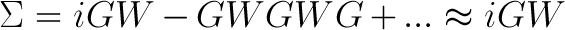
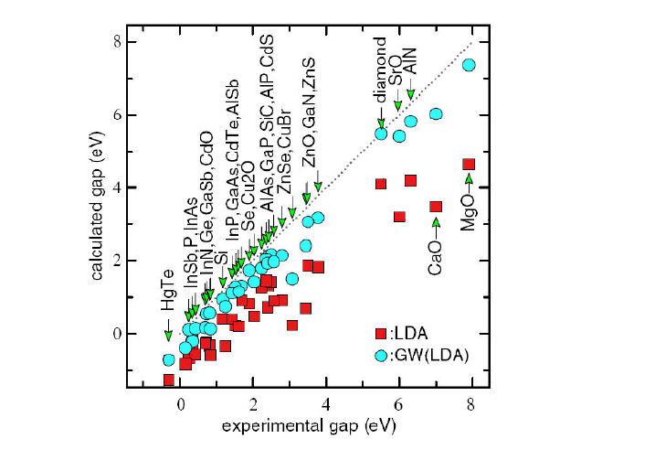
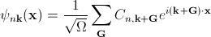

I am a 2nd year graduate student in the UC Berkeley Physics Department. I work in Professor Steven Louie's research group doing first principles calculations of electronic structure and material properties. I am currently working on calculating the band structure and optical spectra of two-dimensional materials like molybdenum disulfide (MoS2) and graphene on monolayer boron nitride. In my research, I use Quantum ESPRESSO, a software package for Density Functional Theory calculations, and BerkeleyGW, a software package for calculating the excited state properties of materials using the GW approximation and by solving the Bethe-Salpeter Equation. BerkeleyGW is a massively parallel computational package developed by members of the Louie Group. I am interested in understanding it and contributing to further development.
The physics of single particles is well understood, and it is possible to write down equations describing systems of many particles. However, solving these equations for a large number of interacting particles, like those found in real materials, is extremely computationally intensive and cannot be done exactly. Instead, these systems are solved using various levels of approximation. One of the most widely used ab initio methods is Density Functional Theory (DFT). The main idea behind DFT is that there is one-to-one correspondence between the potential energy of the many body system and the electron charge density, and minimizing the energy as a functional of the charge density allows you to find the system's ground state energy and charge density. Thus, it is possible to reduce the equation describing the many body system to a set of self-consistent, one-particle equations called the Kohn-Sham Equations. The solutions to the Kohn-Sham equations are non-interacting, single-particle orbitals that reproduce the ground state electron density. DFT has been very successful at predicting ground state properties of molecules and solids, but it is less successful at predicting excited state properties, such as band gaps and the dielectric response, which are of great interest both fundamentally and for electronics applications.
In the Kohn-Sham equations, the many-body exchange and correlation effects are approximated by a local exchange correlation functional. However, the correct way of treating the many-body exchange and correlation effects is through the non-local self-energy operator [1]. In the preceding discussion, the electrons are treated as non-interacting particles, which is counterintuitive since the Coulomb interaction, which dominates electron interactions, is extremely strong. In most materials, however, it's reasonable to keep an independent particle picture by describing a quasiparticle. The quasiparticle consists of an electron and a cloud of positive charge (due to Coulomb repulsion) that surrounds the electron and screens the Coulomb interaction enough to justify an independent particle picture. We can treat this screened coulomb interaction as a perturbation. In the GW approximation [1,2], the electron self-energy is expanded as a series in the screened Coulomb interaction, W, and the series is truncated at the first term:
 (1)
Here, G is the one-particle Green's function and W is the screened Coulomb interaction. Typically, one iteration of the GW method is used to correct the self-energy from a previous DFT calculation; this is known as one-shot GW or G0W0. The GW method has proven to be very accurate in predicting band gaps (Fig. 1).
|  |
BerkeleyGW is a massively parallel program written in Fortran90 that implements the GW method [4]. The GW approximation is implemented in two steps: 1) epsilon, which computes the inverse dielectric matrix and 2) sigma, which computes the self-energy correction using the inverse dielectric matrix. The calculation is done with a plane-wave basis in Fourier space:
 (2)
Here, n refers to the band number and k refers to the momentum. Different parts of the calculation can be parallelized over k-points, bands and G-vectors. BerkeleyGW scales to 10,000's of CPUs and can simulated up to 100s of atoms.
The main part of epsilon involves calculating the polarizability which can be written as a matrix-matrix product:
 (3)
(3)
Here, M is a matrix and (n,n',k) is a composite index, where n refers to occupied states, n' refers to unoccupied states, and k refers to a k-point. Thus, calculating epsilon has two major components: 1) computing the individual matrix elements and 2) matrix multiply. In many-body problems, it is customary to describe scaling in orders of N, where N is the number of atoms in the system. Calculating the matrix elements scales as N3logN. This step is parallelized over any factor of Nc*Nv processors, where Nc is the number of unoccupied states and Nv is the number of occupied states. The matrix multiply step scales as N4, since the index (n,n',k) scales as N2 and dense matrix multiply scales as N2. This step is parallelized over GG'. Here is a plot of the speedup with respect to the number of CPUs used in the epsilon calculation:
 |
The sigma executable calculates the self-energy correction. Within the GPP model, the most expensive part of the calculation involves calculating this term:
 (4)
(4)
Computing the matrix elements scales as N2logN, where N is the number of atoms. This is a factor of N less than the matrix elements for epsilon because we are typically only interested in the quasiparticle correction for a small number of states. After computing the matrix elements, the summation over empty states, n'', scales as N3. The matrix element calculation is parallelized over n, n', and n'' by distributing the bands evenly over a number of processor pools. The pool size is chosen to minimize the number of CPUs required to store the wave functions. The summation is parallelized over n and n'. Here is a plot of the speedup with respect to the number of CPUs used in the sigma calculation:
 |
The GW-BSE approach implemented in BerkeleyGW is regarded as the most accurate method for calculating the quasiparticle and optical properties of materials. It can reproduce experimental measurements with 50-100meV accuracy. The major drawback of the GW method is its computational cost. The calculation requires a summation over a large number of empty states. The number of empty states needed scales with the system size, so calculations for molecules and nanostructures is extremely expensive. Furthermore, as the number of states increases, so does the size of the wave function that must be stored in memory. Currently, BerkeleyGW can handle systems of on the order of 100 atoms. Most other implementations of the GW method are limited to 10s of atoms.